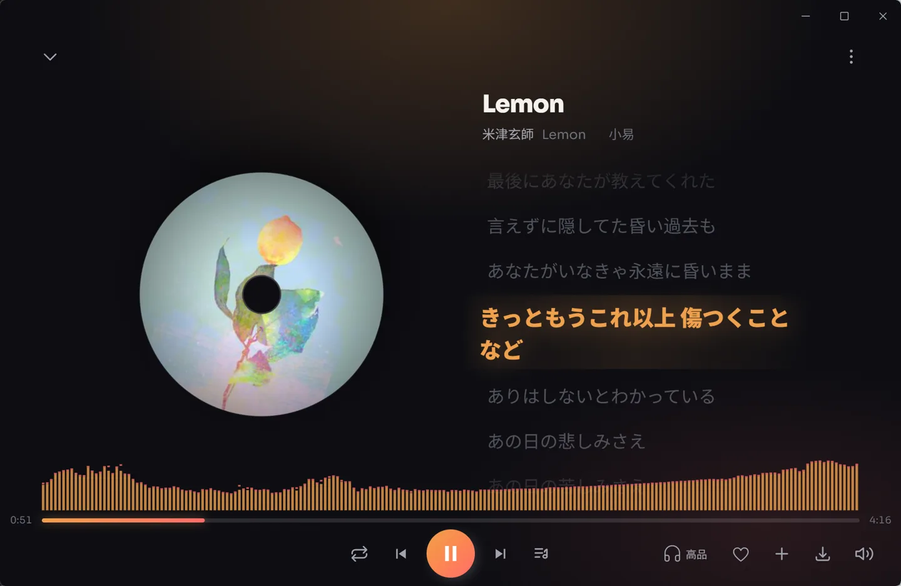
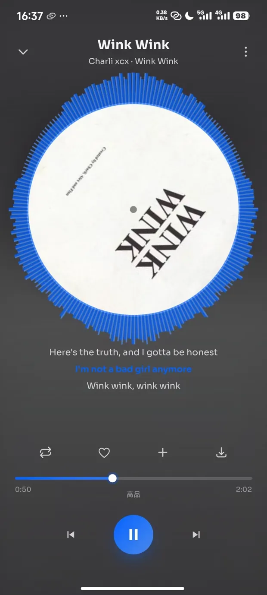
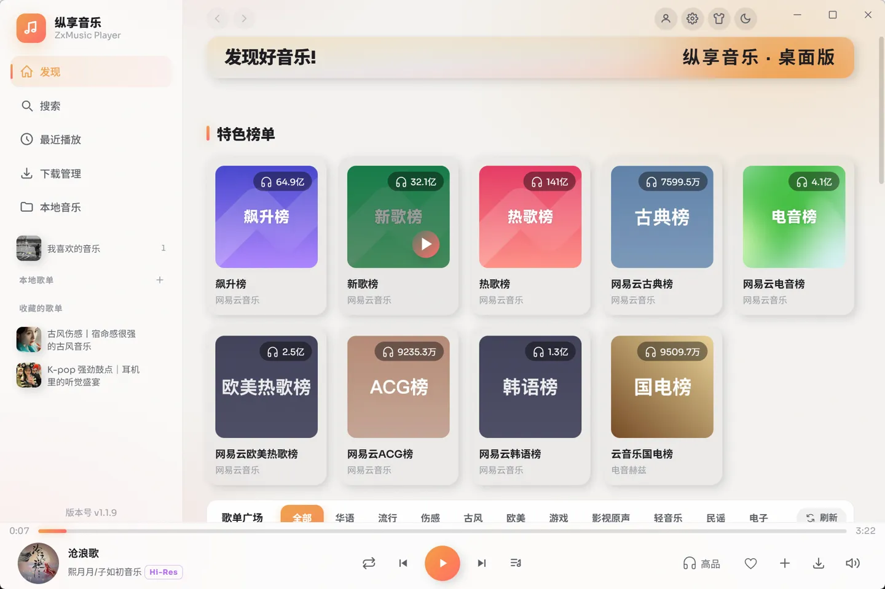
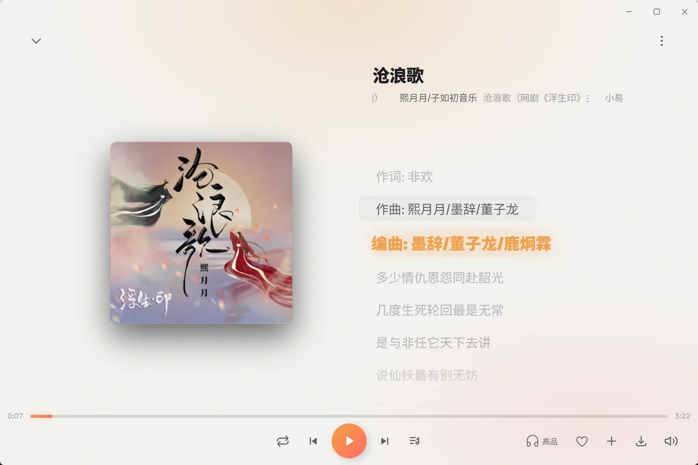
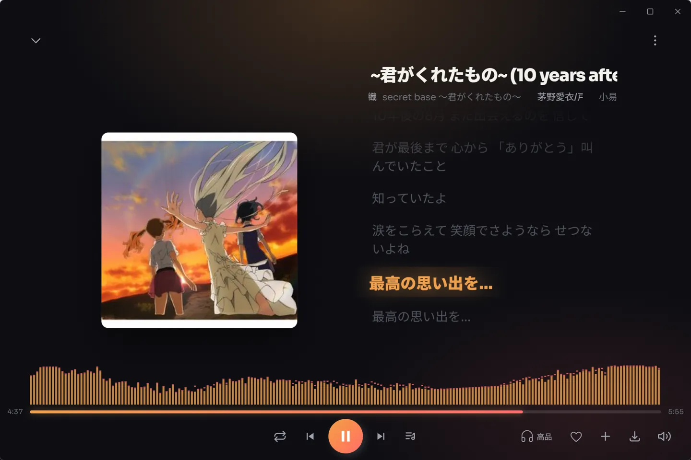
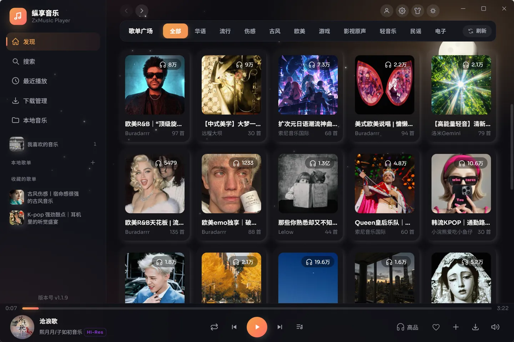
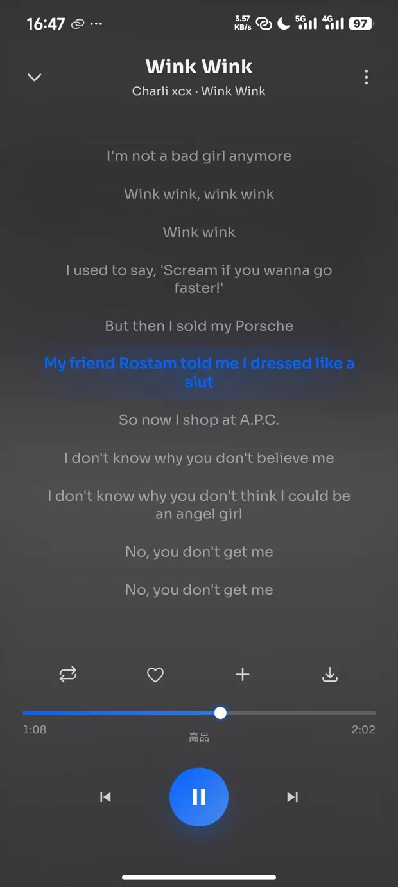

Tauri + React 高品质音乐播放器
纵享音乐（ZXMUSIC）把 Windows 桌面端、Android 移动端和 Web 端统一到同一套前端， 播放引擎、频谱采集与网络层按运行环境自适应切换。桌面端用原生音频栈跑无损与 Hi-Res， 安卓端息屏后仍能自动续播。


不是套壳播放器
App 端走 Rust + Kotlin 原生链路，浏览器端退化为标准 Web 能力—— 上层业务、路由与缓存策略三端完全共享。
实时频谱可视化
桌面端用 WASAPI loopback 直接捕获系统真实输出，Rust 侧做 FFT，约 60ms 一帧推给前端 canvas。 零相位差、不随播放进度漂移。环形与线性波形两套形态，可配竖条数、渐变、镜像与霓虹。
原生播放引擎
基于 rodio + symphonia 的解码链路，支持无损与 Hi-Res 输出。前端用一个 AudioLike 代理屏蔽引擎差异，
桌面可在原生 / Web Audio 之间热切换，下一次播放即生效、不中断当前流。
息屏也能连播
安卓 WebView 冻结后 JS 事件链会断，因此播放会话的唯一权威（队列、下标、随机洗牌序列）下沉到 Rust， 由守护线程接管音频焦点、系统媒体面板按键和播完检测。
四音源可切换
小易（网易云）、小酷（酷我）、程大师、备用小易。搜索支持单曲 / 歌手 / 专辑 / 歌单 / 用户， 按端能力自动隐藏不可用音源。
下载与标签写入
带并发配额与失败重试的下载队列、.part 断点临时文件、原格式保留，可写入歌名 / 歌手 / 专辑 / 封面标签，
并可选同步下载歌词；文件名模板可配。
本地音乐
桌面递归扫描 + lofty 读标签；安卓走 MediaStore + JNI 适配分区存储。歌词自动定位，
.lrc 多编码解码（UTF-8 BOM / GBK / GB18030），.krc 直接解密。
分层缓存
歌曲地址走内存 Map + localStorage LRU，封面 IndexedDB blob，歌词内存 LRU； App 端另有 Rust 磁盘缓存，播放与下载命中时直接复用本地文件。
系统集成
托盘常驻、单实例、无边框自绘标题栏、桌面歌词窗口。切换耳机 / 扬声器后播放流原位重连， 频谱采集链同步自愈，不需要重启或手动恢复。
扫码登录
1.1.9 起支持扫码登录账号，歌单可收藏至账号，播放记录与收藏在多端之间对齐。
界面预览
以下均为 v1.1.9 实机截图：桌面端四张（浅色 / 深色主题各两态），移动端三张。点击图片可打开原图。

发现页
侧栏收着发现、搜索、最近播放、下载管理与本地音乐，下面是本地歌单与收藏的歌单。 主区「特色榜单」按播放量出卡，「歌单广场」提供华语 / 流行 / 伤感 / 古风 / 欧美 / 游戏 / 影视原声 / 轻音乐 / 民谣 / 电子十类标签切换，侧栏底部常驻当前版本号。

全屏播放页
左侧大封面，右侧歌词逐行滚动，当前行用品牌橙高亮、其余行淡出，词曲作者信息随歌词一起滚动。 顶部保留曲名、歌手、专辑与来源音源标识，底部进度条常驻播放控制、音质档位、收藏、加入歌单、下载与音量。

波形条频谱
铺满整屏底部的录音风格波形条就是频谱本体。桌面端用 WASAPI loopback 直接抓取系统真实输出， 在 Rust 侧做 FFT 后约 60ms 一帧推给前端 canvas，所以条子跳的就是你耳朵听到的那一路， 与节拍零相位差、不随播放进度累积漂移。频谱有环形与波形条两种样式，可叠渐变色彩、镜像对称与发光霓虹。

歌单广场
同一套布局切到深色配色，封面网格带播放量角标与曲目数。界面底色由几层品牌橙与珊瑚色的径向渐变光斑叠出， 深色主题下还会浮出月亮与星空装饰层。主色可在 12 套主题色之间切换，本站用的琥珀橙就是其中一套。
环形频谱
环形频谱贴紧唱片外沿环绕一圈，三行歌词当前行高亮。安卓没有 AAudio 输出环回， 改由播放插件在解码样本流上抽头喂给同一套 FFT，频谱照样跟手。这一台的界面主色是 12 套主题色里的「海之蓝」， 频谱默认跟随主题色，也可切自定义。

全屏歌词
收起封面与频谱的纯歌词态，一屏能容下十行左右。当前行加粗高亮并垫一层柔光底纹， 上下行按距离逐级淡出，底部保留循环、收藏、加入歌单、下载四个动作与进度条、音质档位。
三端能力对照
同一个功能在不同端的实现路径不一样，能力也就有边界。这里如实列出差异， 方便你决定装哪一个。
| 维度 | Web | Windows 桌面 | Android |
|---|---|---|---|
| 播放引擎 | HTML <audio> | 原生（可切 Web Audio） | 原生（恒定） |
| 频谱数据源 | captureStream | WASAPI loopback + FFT | 解码抽头 |
| 无损 / Hi-Res | 受限提示 | 支持 | 支持 |
| 后台自动续播 | — | — | Rust 守护 |
| 本地音乐扫描 | — | std::fs + lofty | MediaStore + JNI |
| 下载队列 / 写标签 | 浏览器直下 | 队列 + 标签 | 队列 + 标签 |
| 小酷（酷我）音源 | ✕ | ✓ | ✕ |
| 程大师音源 | ✕ | ✓ | ✓ |
| 托盘常驻 / 单实例 | — | 支持 | — |
| 音量控制 | 正常 | 正常 | 交由系统音量键 |
五档音质，客户端拉满
从流畅到 Hi-Res 逐档可选。Web 端受浏览器音频栈限制，无损与 Hi-Res 会提示改用客户端； 桌面与安卓走原生解码，可完整取到最高档。
档位判定严格
Hi-Res 需同时存在独立字段与对应码率才会标注，避免把纯无损误标成 Hi-Res。
设备切换跟随
Windows 用 IMMNotificationClient 回调感知默认输出端点变化，安卓用 AudioDeviceCallback 桥，
换设备后播放流与频谱采集各自原子重建。
预加载与校准
按播放模式预取下一首，节拍同步校准，音量悬浮交互，队列面板滑入时主界面 3D 位移让位。
更新日志
- 支持扫码登录
- 歌单收藏至账号
- UI 交互优化
- 安卓后台自动续播守护
- 本地音乐与 krc 歌词支持
应用内会自动拉取
zxmusic.json 并弹出更新提示，也可从本页下方直接取安装包。
技术栈
桌面壳与音频链路自己实现，需要的 Tauri 插件直接 vendor 到仓库里改。
常见问题
为什么网页版不能用无损和部分音源？
浏览器拿不到系统音频输出，也无法注入被限制的请求头。Web 端只能用 <audio> + Web Audio，
无损 / Hi-Res 会设限并提示使用客户端；小酷音源需要真浏览器引擎过 WAF 质询，只有桌面端具备这个条件。
安卓端息屏后为什么还能连播？
息屏或切后台后 WebView 会被冻结，JS 的播完事件、网络请求都可能断掉。纵享音乐把队列、下标和随机序列的 唯一权威放在 Rust，由原生守护线程接管焦点、通知栏按键和播完检测，回前台时再用快照对齐状态，避免"连跳两首"。
桌面端频谱为什么能做到零延迟？
桌面原生播放没有 captureStream 可用，所以改由 Rust 用 WASAPI loopback 抓取系统实际输出的信号做 FFT，
采到的就是你耳朵听到的那一路，天然与节拍对齐，不依赖播放进度事件，也就不会累积漂移。
换了耳机，播放会断吗？
不会。默认输出设备变更后，应用会原位重建播放流（必要时降级为停止 + 重新加载 + 续播位置），频谱采集链同步自愈。
支持哪些歌词文件？
.lrc 支持 UTF-8 BOM / GBK / GB18030 多编码自动解码，.krc（酷狗）支持解密读取，
本地音频的内嵌封面会提取到缓存目录供界面和系统媒体面板使用。
遇到问题怎么反馈？
应用内「关于」页可联系作者 DannyEnstein，GitHub 主页 github.com/Yinengmr。 反馈时附上版本号、系统版本和具体复现路径最快。
纵享音乐 v1.1.9
● 支持扫码登录 ● 歌单收藏至账号 ● UI 交互优化